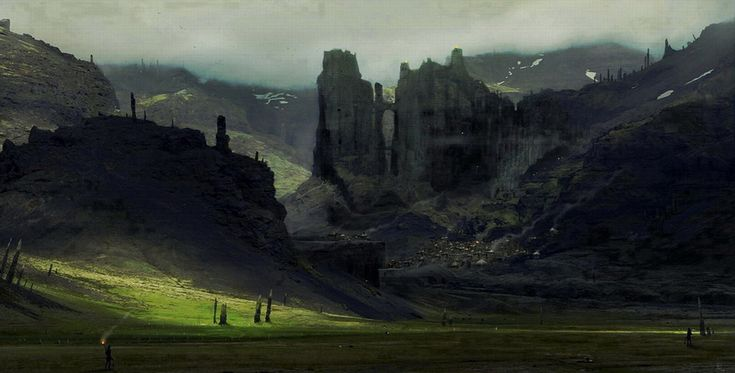
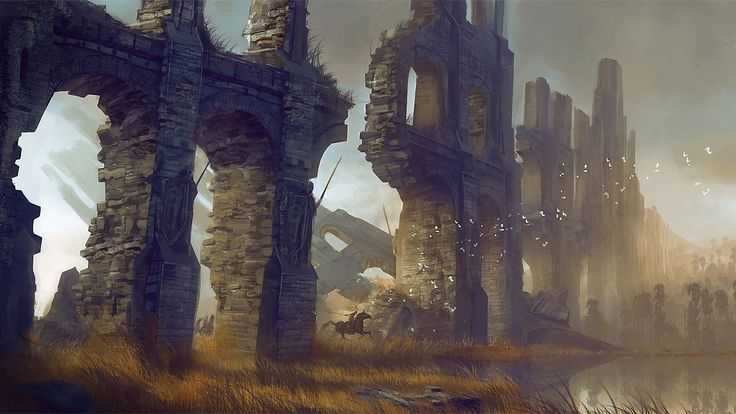
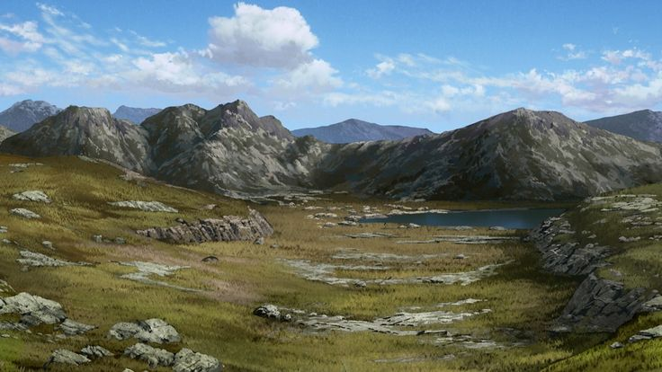

Пейзаж здесь менее уютный, ветреный, холмистый, с редкими скалами, оврагами и перепадами высот. Поля почти исчезают, уступая место маленьким пастбищам, где пасутся выносливые и норовистые звери. Прилески редки и часто скрывают в себе больше, чем просто лисиц и оленей. Погода здесь более суровая, чем в нижних равнинах, с частыми перепадами температуры. Иногда здесь бывает туман, настолько густой, что в нём теряются даже опытные отряды авантюристов. Местность пестрее по ландшафту: от каменистых холмов на севере до болотистых низин возле леса Грёз, заросших чёрной и фиалковой травой. Живность в верхних равнинах более дикая и непредсказуемая. Волки, хищные птицы, Фубусы, Хаку, Серые Дрейки и даже Кросты что бродят по ночам вдоль старой стены.
Идрийские равнины верхние

Добро пожаловать в Идрийские равнины верхние!
Верхние равнины — это более суровый и дикий родственник своих нижних братьев. Простираясь от подножия Плато Раскола до стен Идрия, они представляют собой переходную зону между миром живых и землями мёртвых.
Природа

Вал Адриана

Близ самой столицы, в глубине каменного холма, располагается Королевская усыпальница — гробница первых королей Идрийской династии. Это монументальное строение, вырезанное в скале, где в гранитных саркофагах покоятся древние владыки. Сюда приходят паломники, историки, некроманты — каждый по своей причине. На границе с Плато Раскола тянется разрушенная стена, некогда защищавшая эти земли от чего-то... страшного - Вал Адриана. Сейчас она — руины, поросшие мхом, кое-где обрушенные, но всё ещё величественные. Многие считают, что она больше символ, чем реально действующий барьер, ведь со стороны плато, периодически сползают нежить, чудовища и порождения извращённой магии крови, особенно в ночное время. Монстры, мутанты, безликие, живые тени — всё это появляется и исчезает одинаково внезапно. По этой причине путешествовать по верхним равнинам на север в одиночку достаточно опасно.
Инфраструктура

Здесь меньше поселений, но всё ещё можно встретить одинокие деревни, чьи жители уже привыкли к постоянной тревоге. Две главные дороги пересекают эту местность. Северная ведёт к Виасису, древней столице вампиров, а восточная — к Великому Лифту, который уходит глубоко вниз, в нижний мир, покрытый тайнами. Окрестности лифта хорошо охраняются, но сама дорога опасна: мимо неё нередко проходят бродячие гоблины или группы головорезов.
Таким образом...
Верхние равнины гораздо более опасны, чем нижние, но и здесь жизнь идет своим чередом.